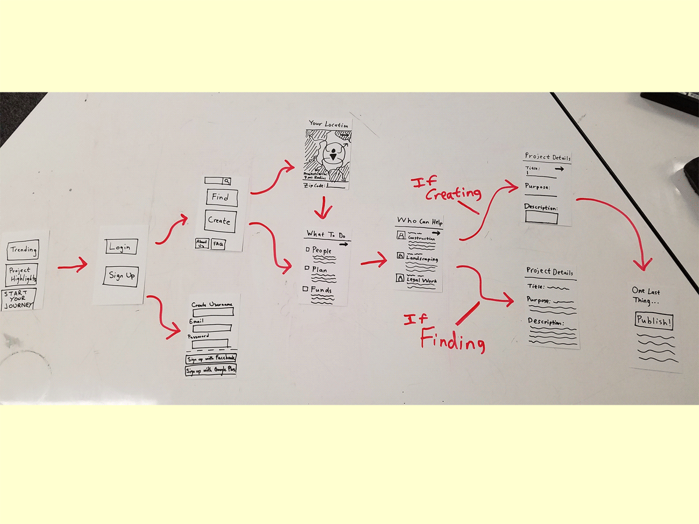
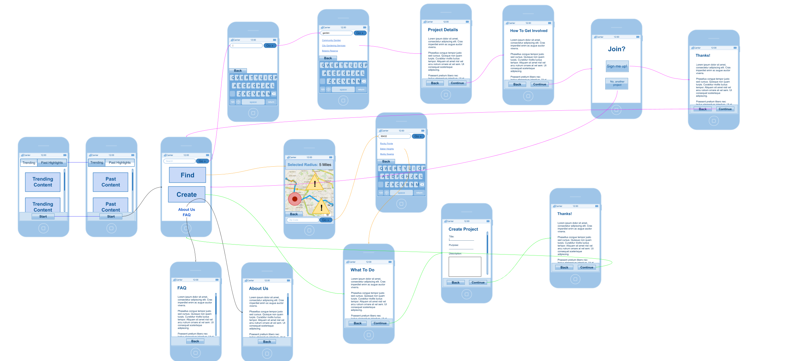
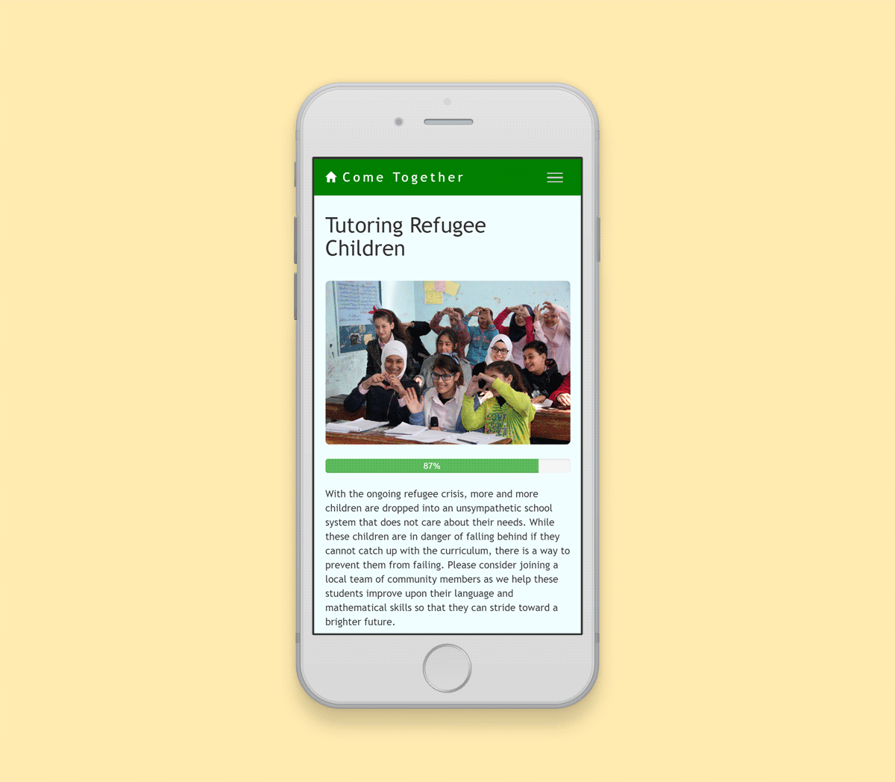
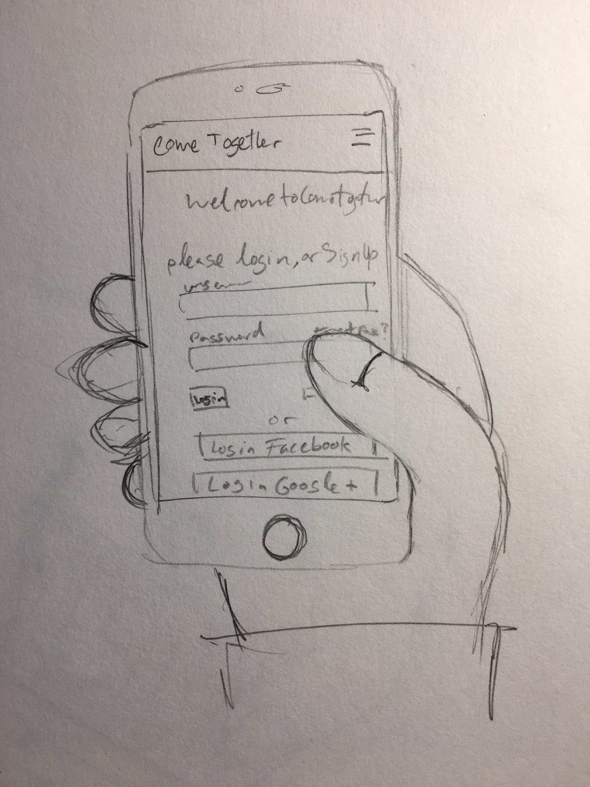

For most accurate experience, please view on mobile.
Just press “Login” to enter.
Project Summary
Made for an Interaction Design class under the Crowd-Sourcing studio.
Role
As a UX and UI Designer I wrote storyboards, mapped the user flow, designed wireframes, developed content strategy, A/B tested app, and pitched and presented app.
Team Size
3
Tools
Google Drawings, Google Analytics, Pen and Paper
Skills
Storyboarding, User Flows, Wireframing, Content Strategy, Usability Testing, A/B Testing, Public Speaking and Presenting
Time
Jan 2017 – Mar 2017
Problem
How can we help local communities fix their problems by building communal spirit?
Solution
Create an online environment that cultivates community involvement and empowers local projects.
Storyboard
Potential stakeholders disliked unnecessarily long and expensive public works and believed local initiatives were more effective. In response I wrote 1 of 3 storyboards that incorporated stakeholder concerns.
The scenario introduced Doris who helped her community collaborate to fix a pothole using our app. Our storyboards helped the team demonstrate to instructors how users may interact with our solution.
A storyboard about Doris, who wanted to plant a garden.
User Flows and Wireframes
Low-Fidelity
The team prototyped variations of our solution. I mapped out and embedded into a paper prototype a set of user flows that explored a user’s possible options. My group was inspired by Kickstarter’s simple yet effective onboarding process and Google Map’s display of location radii.
By focusing on the user quickly going from point A to B, I drafted a flow that helped users efficiently sign up and create or find projects in their immediate areas.

The user flow I sketched that implemented the Google Maps API.
Low-Fidelity Testing
To test our flow, we had other teams use our paper prototypes. Through observation we categorized breakdowns in the prototypes and assigned severity ratings based on Nielsen’s “Ten Usability Heuristics”. We gained information on concrete issues that affected our prototypes and extracted insights to determine changes for the next iteration.
Lo-fi Video Demo
Before wireframing our flow, our studio asked us to make a demo of our prototype's interactions and how it addresses user needs.
High-Fidelity
Now that we had insights from testing, we had to reiterate by implementing them into our prototype. To do so, I tuned the user flow by incorporating user feedback and finalizing the changes on the current flow into a new refined flow with digital wireframes.

Come Together’s fleshed out wireframes.
Site Content
After presenting the wireframes to instructors we began implementing the app. I created realistic place-holder content for the site by specifying formatting and how content should focus around social-good and written from a local citizen’s perspective. This filler content represented Come Together’s mission and communicated our values to potential users.

Example projects focusing on tutoring refugee children and interacting with the elderly.
A/B Testing
We tested our web prototype by having two users from our target userbase try the site and ran an A/B experiment online. Observations led to discovering user breakdowns and Google Analytics data that helped us implement changes to the UI.
Slow user response time to find the login button led to increased button sizes for ease of navigation and finger-length accessibility.
A chi-squared test in Google Analytics supported making project images larger and adding a progress bar by rejecting our null hypothesis of both versions having the same percentage of clicks on projects.
Google Analytics data showed a 14% increase in visitors with the rejection of the null hypothesis (in orange).

User breakdown in promptly finding login button drawn by Cindey Caine.
Presentations
At the end of the quarter we showcased our work via a 30-second elevator pitch and a poster session. I helped with writing and giving the pitch and designing the slide and poster. By pitching our civic-minded project to industry professionals and instructors, we won an award for “Most Likely to Change the World”.
Final presentation materials (slide deck made in Illustrator).
Ideal Next Steps
Had we more time, the team would have focused on designing for larger screens for a proper responsive web experience. As it stands, only the mobile layout is properly designed for.
Further user testing on a larger scale would be another important item, since we wanted to see if multiple groups of users could come together (heh) and create activity for a public works project.
Reflection
Come Together was a fast-paced marathon through the UX process and helped me understand the foundational concepts and experience of collaboration in a team under time constraints. I’m thankful for the opportunity to work with both UX designers and programmers for a project that addresses real world issues.